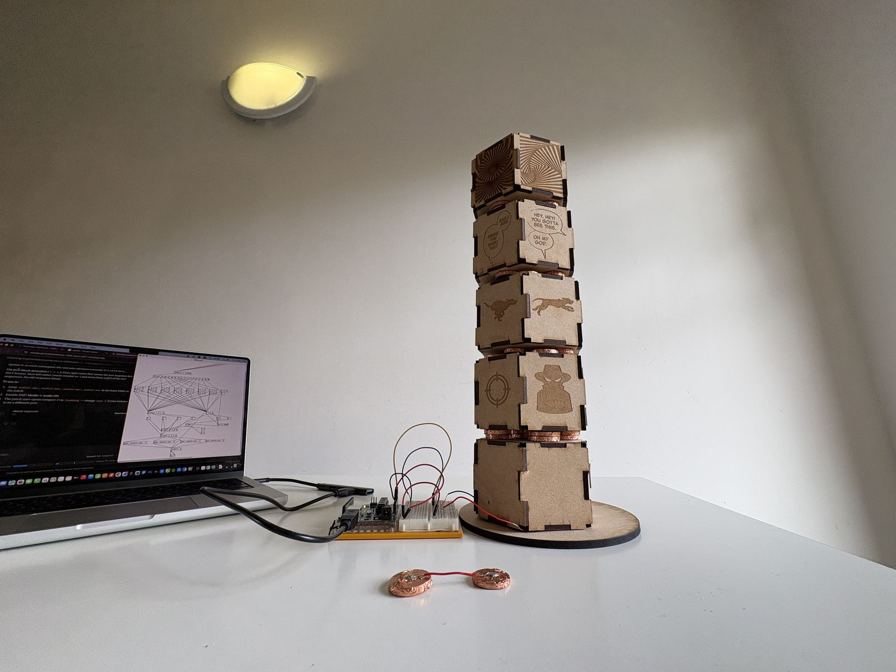
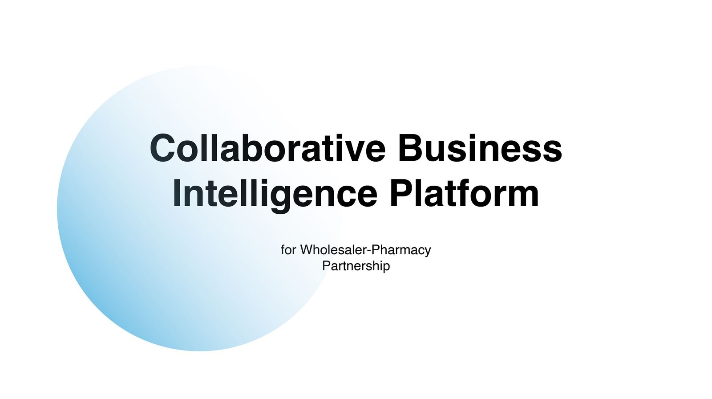
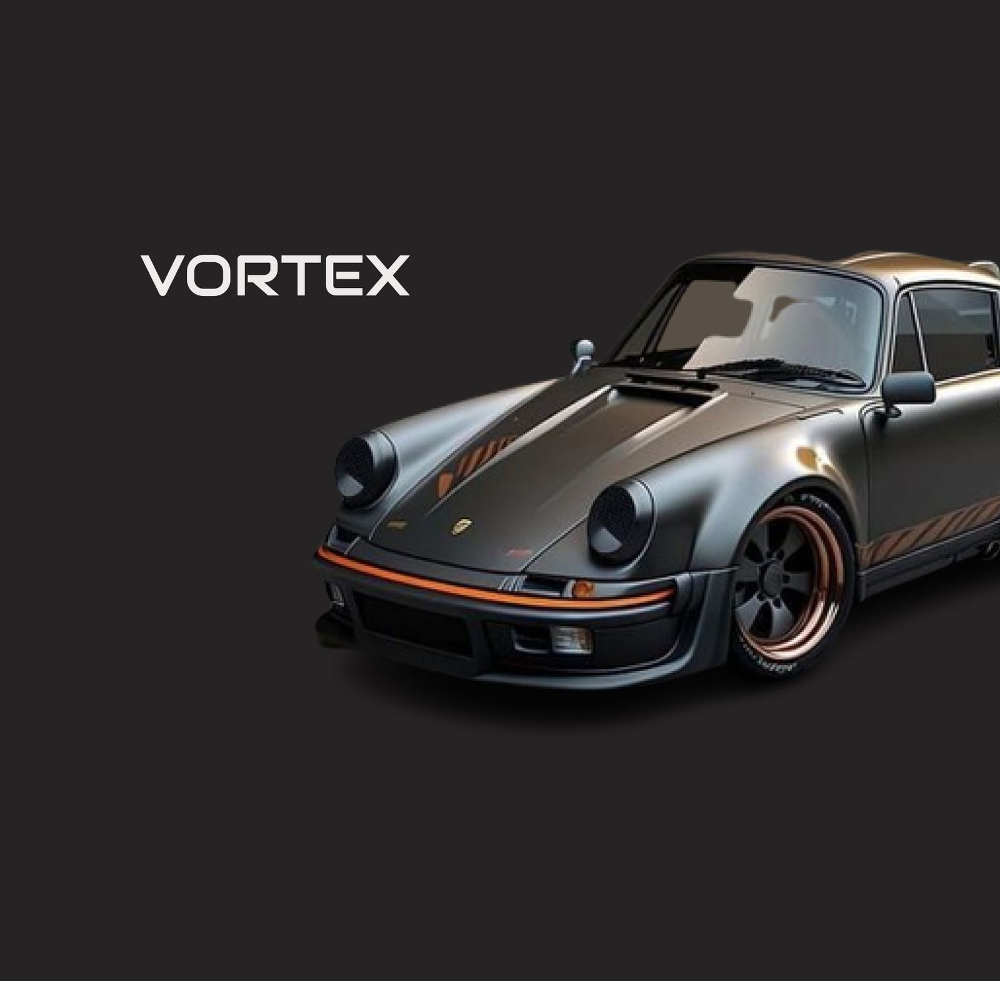
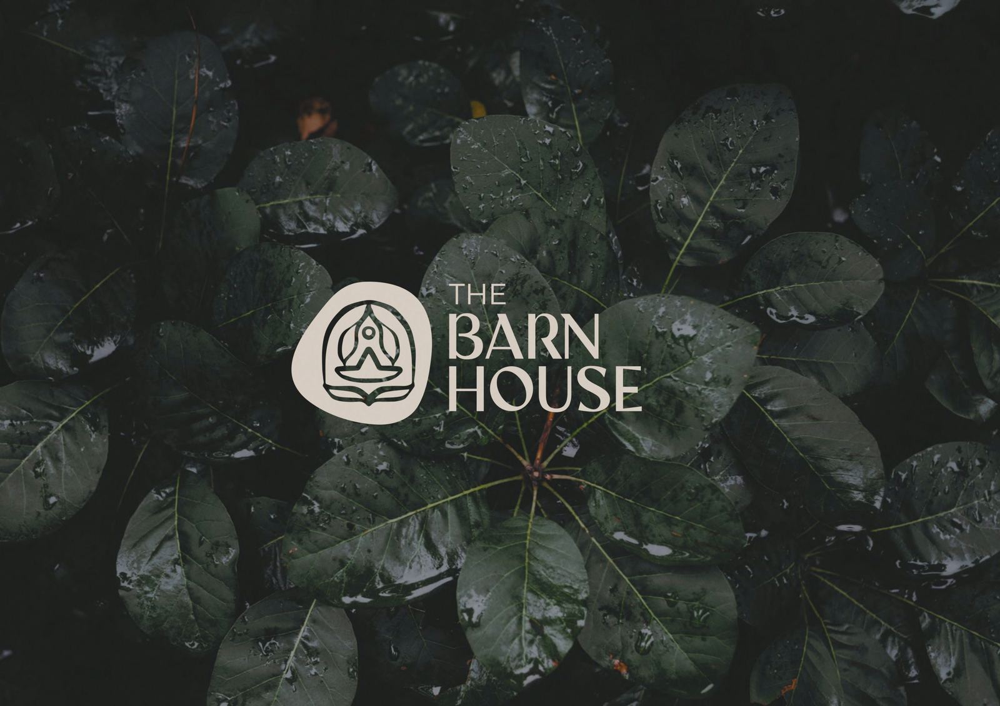

Curated Projects
View All →

Heritage Site Preservation by VR — Surfacing erased histories at Bunratty Castle.
View Case Study →
A modular interactive sculpture built with Arduino, Pure Data & laser cut MDF.
View Project →
How does replacing guesswork in pharmacy supply chains reduce waste across wholesale and retail operations?
View Project →
Unified 3 touchpoints for a car modification brand into one coherent digital experience.
View Project →